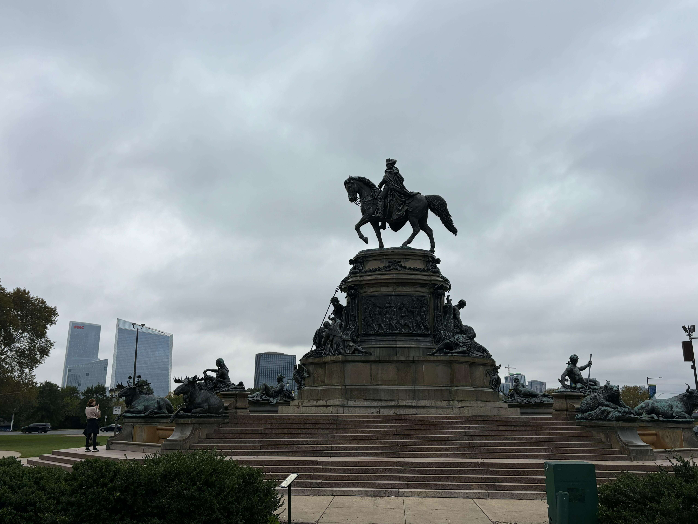
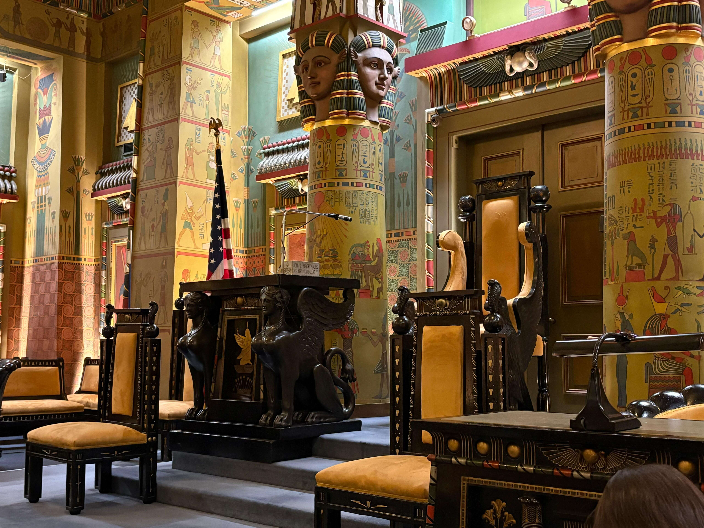
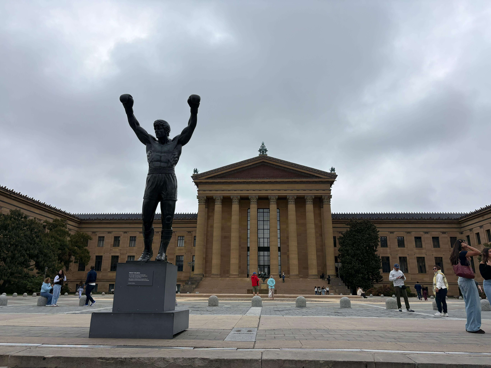

Philadelphia
Pennsylvania · United States
Philadelphia is one of America's most historically significant cities, known for its rich heritage, distinctive architecture, and vibrant urban atmosphere. As the birthplace of American independence, it played a central role in the country's founding and remains an important destination for understanding American history. Beyond its historical landmarks, Philadelphia is known for its impressive public buildings, museums, cultural attractions, and lively neighborhoods. The city's architecture reflects different periods of its development, creating an interesting contrast between historic streets and modern city views. This collection brings together my personal photographs and memories from Philadelphia, capturing some of the places and moments that made my visit memorable.

City View
A collection of city views capturing Philadelphia's skyline, architecture, and distinctive urban atmosphere.
Explore Photos ↗
Masonic Temple
An impressive historic building known for its remarkable architecture and rich cultural heritage.
Explore Photos ↗
Rocky Stairs
The famous steps at the Philadelphia Museum of Art, widely recognized from the Rocky films.
Explore Photos ↗